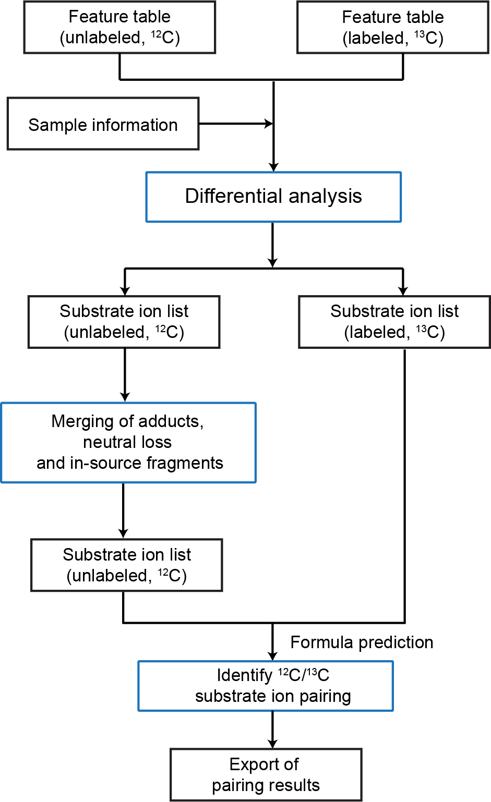
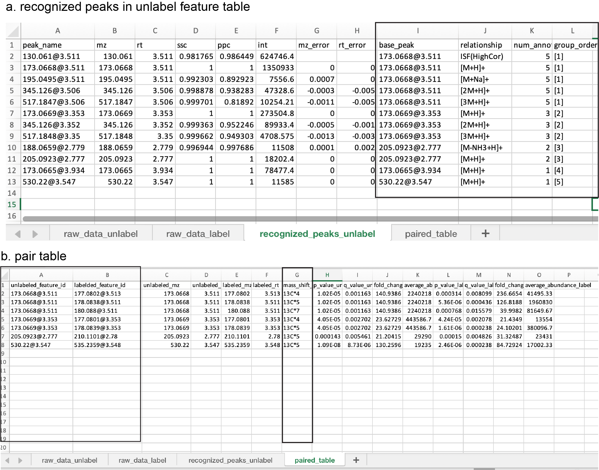

# run the IsoPairFinder workflow
library(tidyverse)
library(IsoPairFinder)
# analysis of HyuA
find_intemidates(peak_table_unlabel = 'peak_table_C12.csv',
peak_table_label = 'peak_table_C13.csv',
sample_info = 'sample_info.xlsx',
path = '~/Project/00_Uric_Acid_project/Data/20250606_isopairfind_test/Demo_data_msdial/',
polarity = c('positive', 'negative'),
control_group = c("WT"),
case_group = c('hyuA'),
mz_tol = 10,
rt_tol = 0.05,
p_value_cutoff = 0.05,
p_adjust = TRUE,
fold_change_cutoff = 20,
is_recognize_adducts = TRUE)3 IsoPairFinder running
3.1 Overview of the IsoPairFinder workflow
Generally, the IsoPairFinder processes the stable isotope tracing (STI) metabolomics data via 3 steps (Figure 3.1): (1) differential analysis; (2) recognition of adduct, neutral loss, and in-source fragment; (3) feature pairing between unlabeled and labeled data.
- Differential analysis: identifying the possible accumulated substrates by comparing mutant and control groups. The unlabeled data and labeled data were processed respectively.
- Recognition of adduct, neutral loss, and in-source fragments: The potential substrate ions that were identified in the unlabeled data were used to retrieve and merge the related features (e.g., adduct, neutral loss, and in-source fragments) to avoid false positives. The extracted ion chromatography (EIC) of ions was also retrieved and checked.
- Feature pairing between unlabeled and labeled data: The reserved substrate ions of unlabeled data were used for chemical formula prediction and further confirming it by searching for pairing substrate ions in the labeled data.

3.2 Running IsoPairFinder and Parameters
The basic use of IsoPairFinder is simply running the R script as below:
The find_intemidates function is the main function of the IsoPairFinder package, which runs the whole workflow to identify potential intermediates from stable isotope tracing metabolomics data.
The parameters are provided below:
- peak_table_unlabel: the feature table name of the unlabeled group. The default file name, “peak_table_C12.csv”. See the requirements in Chapter 2.
- peak_table_label: the feature table name of the unlabeled group. The default, “peak_table_C13.csv”. See the requirements in Chapter 2.
- sample_info: the sample information table. See the requirements in Chapter 2.
- path: the working path.
- polarity: ionization polarity, “positive” or “negative”. Default: “positive”
- control_group: the control group, e.g., “WT”. The group names should be included in the sample information table.
- case_group: the case group, e.g., “hyuA”. The group names should be included in the sample information table.
- mz_tol: m/z tolerance (unit: ppm) for searching the intermediate ions. Default: 10 ppm
- rt_tol: retention time tolerance (unit: minute) for searching the intermediate ions. Default: 0.05 min
- p_value_cutoff: the cutoff of p-value (t-test). Default: 0.05
- p_adjust: whether to perform the multiple comparison correction (FDR adjustment). Default: TRUE
- fold_change_cutoff: the cutoff of fold-change (case vs. control). Default: 20
- is_recognize_adduct: whether to recognize and merge the isotopes, adducts, and in-source fragments. Default: TRUE
3.3 Output
The new folder “00_tracer_result” will be generated in the working directory (Figure 1.2), including “tracer_pair_result.xlsx” and several plots in PDF files. Specifically, these files are provided in the result folder:
-
tracer_pair_result.xlsx: This file contains the results from differential analysis, recognized features, and identified substrate feature pairs. It has 4 sheets:
- raw_data_unlabeled: the differential analysis of the unlabeled group. Some columns below were added to the unlabeled feature table, including p-values, q-values, fold changes, etc.
- raw_data_labeled: the differential analysis of the labeled group. Some columns below were added to the unlabeled feature table, including p-values, q-values, fold changes, etc.
-
recognized_peak_unlabel: the table of recognized adducts, neutral loss, and in-source fragments (Figure 3.2). The method used here was followed from a previous publication1. Some key column definitions:
- base_peak: the base peaks that are used to recognize the adducts and in-source fragments.
- relationship: the relationship with the base peak.
- num_annotation: the number of features that belong to the same group.
- group_order: the feature group ID.
-
paired_table: the table of possible substrate ion pairs identified. Each row represents one pair of substrate ions (Figure 3.2). Specifically,
- unlabeled_feature_id/mz/rt: the property (id, mz, rt) of substrate in the unlabeled group.
- labled_feature_id/mz/rt: the property (id, mz, rt) of substrate in the labeled group
- mass_shift_label: the estimated carbon number
- p_values/fold_changes/average_abundance: the statistics of differential analysis
“volcano_plot_unlabeled.pdf” / “volcano_plot_labeled.pdf”: the volcano plots that show a significant accumulation between the case (mutant) and control groups.
“isotope_pair_plot_overview.pdf”: the overview of the EIC mirror for identified substrate ion pairs.
“isotope_pair_list.pdf”: the lists of EIC mirror plots for identified substrate ion pairs.
“00_intermediate_data”: the intermediate data during processing. It was used for debugging.
